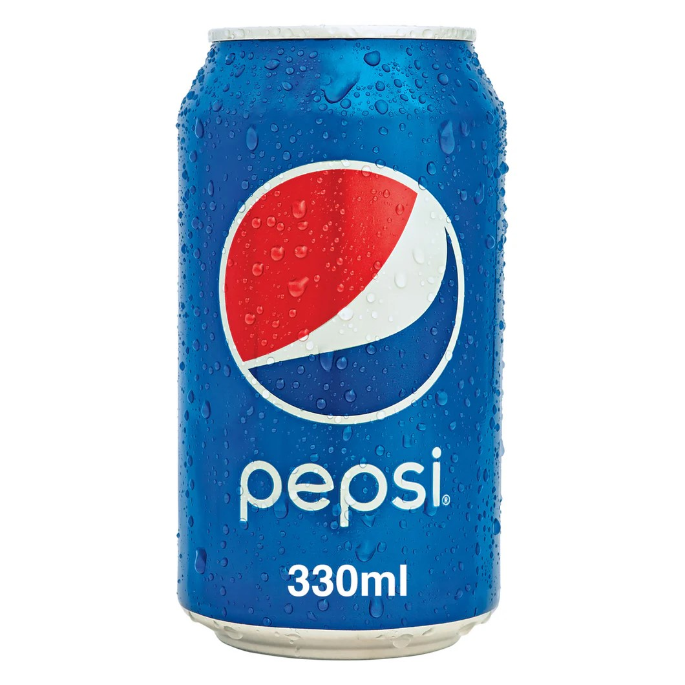
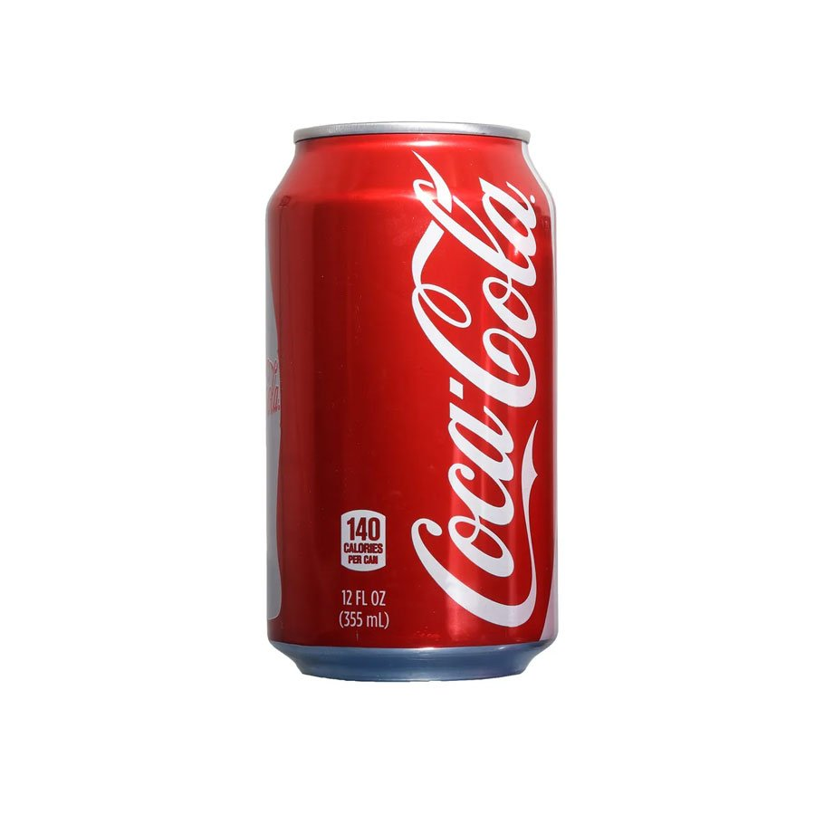
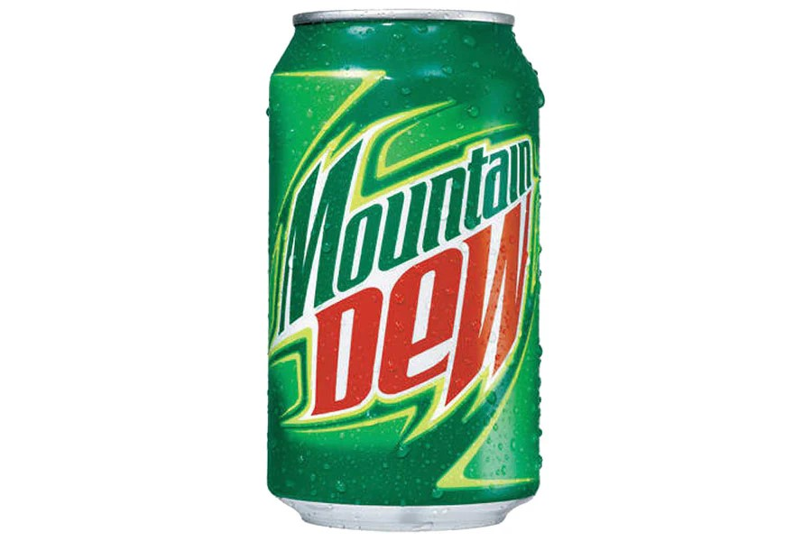
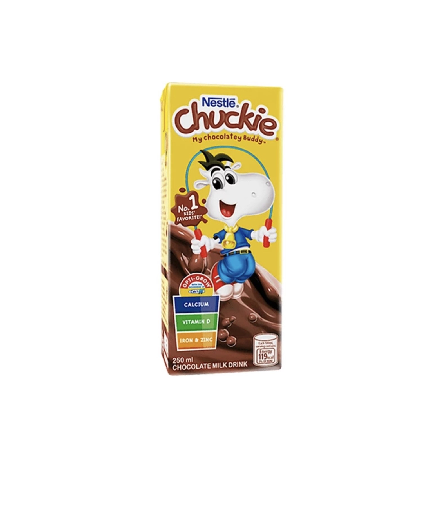
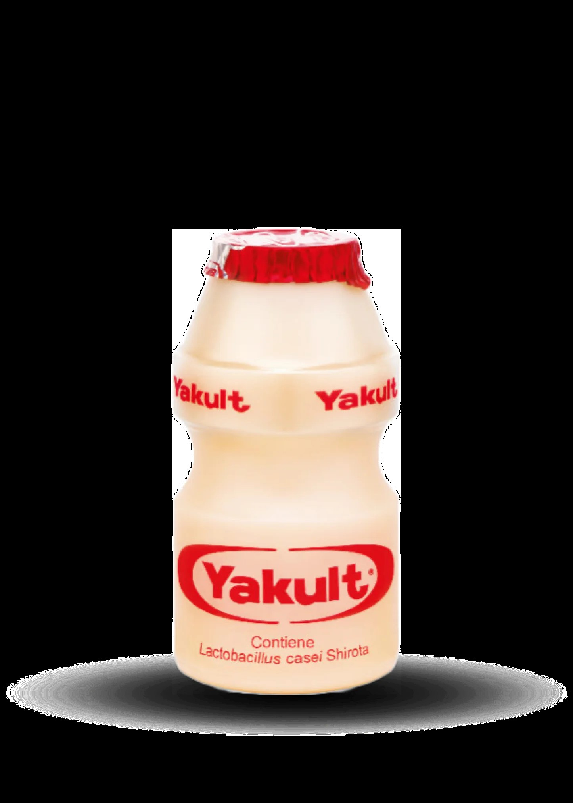
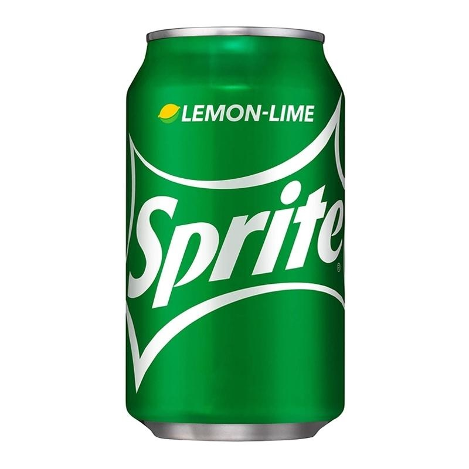
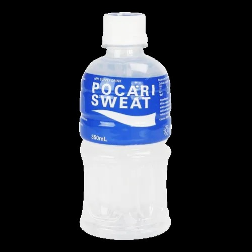
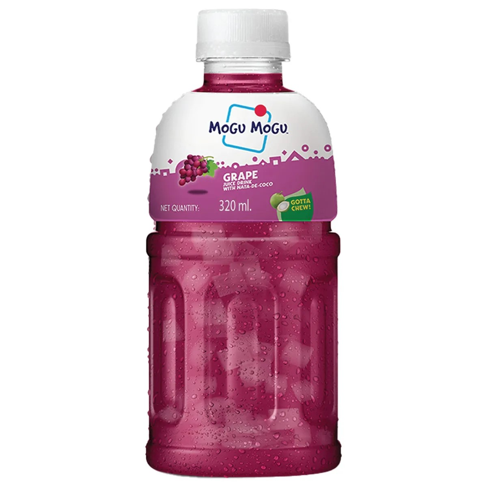
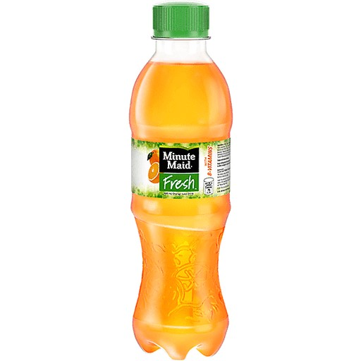
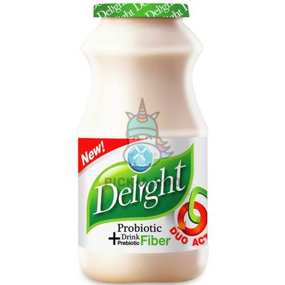

| Name | Weight/Volume | Description | Ingredients | Image |
|---|---|---|---|---|
| Pepsi | 330ml | A carbonated soft drink with a bold, sweet cola flavor. It provides a refreshing sensation with every sip. The caffeine content gives an energizing boost to keep you active. | Carbonated water, sugar, caramel color, phosphoric acid, caffeine, citric acid, natural flavors. |  |
| Coke | 330ml | A classic cola-flavored carbonated drink known for its refreshing taste. It has a unique balance of sweetness and acidity. The drink is widely enjoyed as a thirst quencher worldwide. | Carbonated water, sugar, caramel color, phosphoric acid, caffeine, natural flavors. |  |
| Mountain Dew | 330ml | A citrus-flavored carbonated drink with a high caffeine content. It is known for its bright yellow-green color and fizzy taste. Popular among gamers and athletes, it delivers an instant energy boost. | Carbonated water, sugar, citric acid, natural flavors, caffeine, sodium benzoate, yellow 5. |  |
| Chuckie | 250ml | A chocolate-flavored milk drink popular among kids. It has a rich and creamy cocoa taste that makes it a delicious treat. Fortified with essential vitamins and minerals, it supports healthy growth. | Fresh milk, sugar, cocoa powder, stabilizers, vitamins, minerals. |  |
| Yakult | 80ml | A probiotic dairy drink with a sweet and tangy taste. It contains good bacteria that aid digestion and promote gut health. Drinking it daily helps maintain a balanced digestive system. | Water, skimmed milk powder, glucose, sucrose, Lactobacillus casei strain Shirota. |  |
| Sprite | 330ml | A lemon-lime flavored carbonated soft drink with a crisp and refreshing taste. It is caffeine-free, making it a great alternative to cola drinks. The citrusy flavor is perfect for cooling down on hot days. | Carbonated water, sugar, citric acid, natural lemon-lime flavor, sodium citrate, sodium benzoate. |  |
| Pocari Sweat | 250ml | A mild-flavored sports drink that replenishes lost body fluids and electrolytes. It is popular among athletes and people with active lifestyles. The formula helps keep the body hydrated and balanced. | Water, sugar, citric acid, sodium citrate, calcium lactate, potassium chloride, magnesium carbonate, flavoring. |  |
| Mogu-Mogu | 320ml | A fruit juice drink with chewy nata de coco bits. It offers a fun drinking experience with its delightful combination of flavors and textures. The drink is available in various fruity flavors for a refreshing taste. | Water, fruit juice, nata de coco, sugar, citric acid, artificial flavor, preservatives. |  |
| Minute Maid | 330ml | A fruit juice drink made from real oranges, offering a tangy and refreshing taste. It contains pulp for added texture, making it feel like freshly squeezed juice. A great source of vitamin C, it helps boost immunity. | Water, orange juice concentrate, sugar, citric acid, vitamin C, preservatives. |  |
| Delight | 330ml | A probiotic yogurt drink that helps with digestion. It has a smooth, creamy texture and a deliciously sweet taste. Enriched with live probiotic cultures, it promotes good gut health. | Water, skimmed milk powder, sugar, live probiotic cultures, citric acid, flavoring. |  |